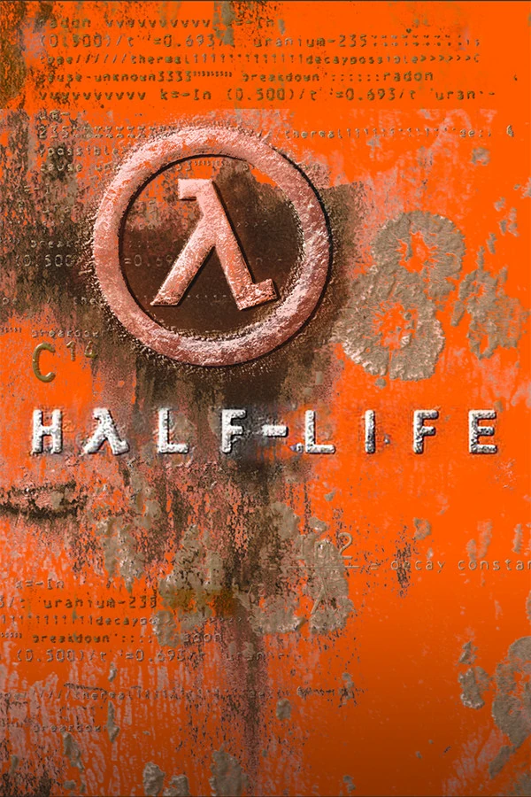
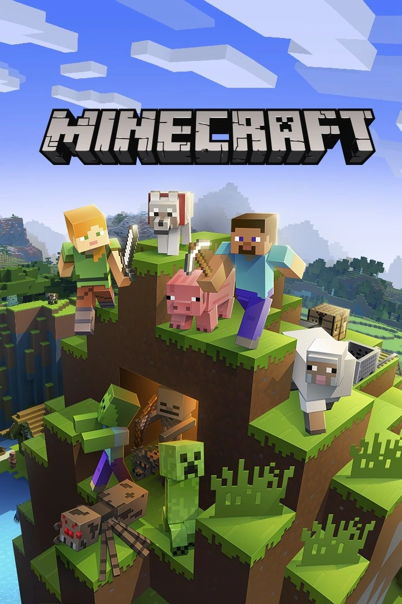
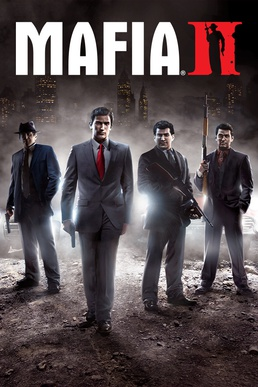
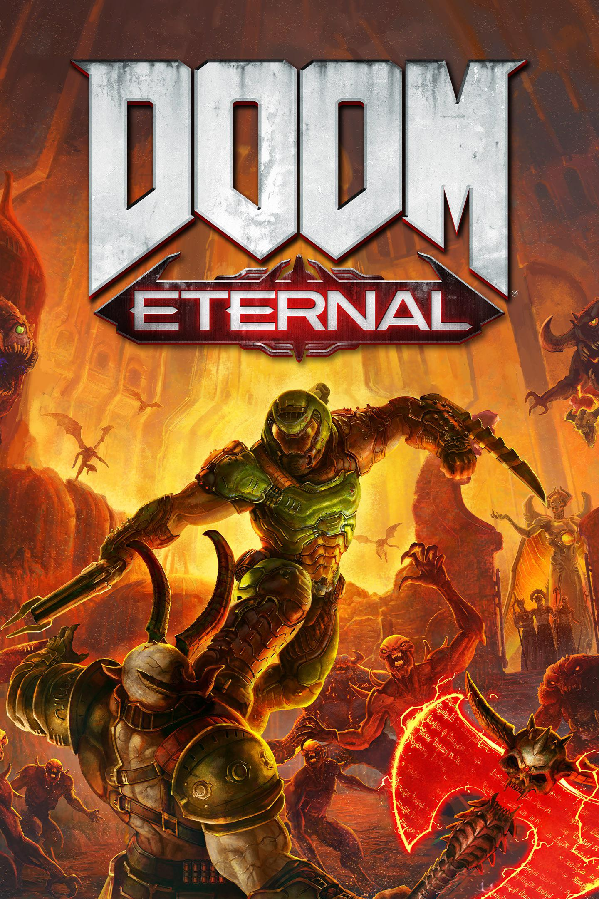

Popüler Oyunlar

Half-Life
Valve tarafından 19 Kasım 1998 de piyasaya sürülen Half-Life FPS türünde çevresel hikaye anlatımı ile sonsuza dek değiştirdi. Black Mesa tesisindeki bir deneyin felaketle sonuçlanmasıyla başlayan oyunda konuşmayan kahramanımız Gordon Freeman ile hem uzaylı istilasına hem de askeri birlikler olan HECU askerlerine karşı hayatta kalmaya çalışıyoruz. Ara sahne kullanmadan hikayeyi tamamen oyuncunun gözünden anlatması (Çevresel hikaye anlatımı) onu bir başyapıt haline getirmiştir.

Grand Theft Auto V
Rockstar Games tarafından 17 Eylül 2013 te yayınlanan GTA V Los Santosun devasa dünyasında üç farklı karakterin hikayesini birleştiriyor. Açık dünya mekanikleri sinematik görevleri ve bol oyuncusu olan çevrimiçi moduyla oyun sektörü için bir dönüm noktasıdır. Aksiyon ve özgürlüğü bir arada arayanlar için hala zirvedeki yerini koruyor.

Minecraft
Mojang Studios tarafından geliştirilen ve tam sürümü 18 Kasım 2011 de çıkan Minecraft sınırları olmayan bir kum havuzu (sandbox) dünyasıdır. Tamamen bloklardan oluşan bu evrende ister tek başınıza hayatta kalmaya çalışın ister devasa mimari yapılar inşa edin. İster devasa makinalar yapın. Oyunun sunduğu özgürlük ve modlanabilir yapısı onu dünyanın en çok satan ve en çok oynanan sandbox oyunu yapmaya devam ediyor.

Team Fortress 2
Valve imzasıyla 10 Ekim 2007 de çıkan bu yapım "Hero Shooter" türünün en eğlenceli örneklerinden biridir. Dokuz farklı karakter sınıfı kendine has görsel stili ve bitmek bilmeyen çatışmalarıyla takım çalışmasını ön plana çıkarır. Yıllara meydan okuyan görselliği ile rekabetçi oyun dünyasının en sağlam kalelerinden biridir.

Mafia
2K Czech 2002 yılında çıkan efsanenin devamı olan 24 Ağustos 2010 da oyuncularla buluşan Mafia 2 1940 ların ve 50 lerin Amerikasını muazzam bir atmosferle sunar. Savaş sonrası evine dönen Vito Scalettanın dostu Joe Barbaro (paşa joe) ile birlikte yer altı dünyasında yükselme çabasını anlatan yapım özellikle dönem müzikleri karlı sokakları ve duygusal hikaye örgüsüyle bir "mafya draması" efsanesidir.

DOOM Eternal
id Software tarafından geliştirilip 20 Mart 2020 de çıkan DOOM Eternal saf aksiyonun en hızlı halidir. Cehennemden gelen yaratıklara karşı dünyayı savunan "Doom Slayer" olarak muazzam müzikler eşliğinde dur durak bilmeyen bir savaşın içine giriyoruz. Agresif oynanış mekanikleriyle FPS türünün en modern ve en sert temsilcisidir.